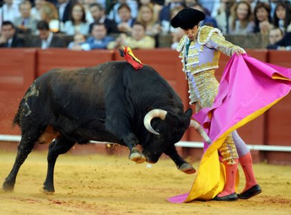
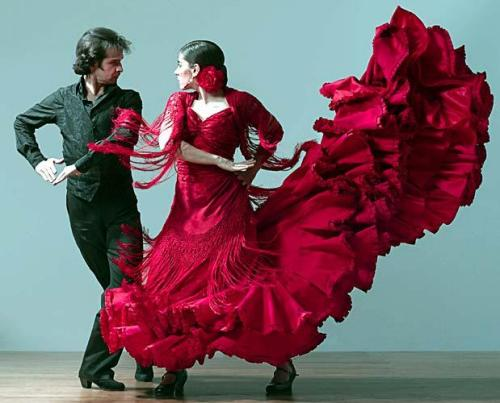
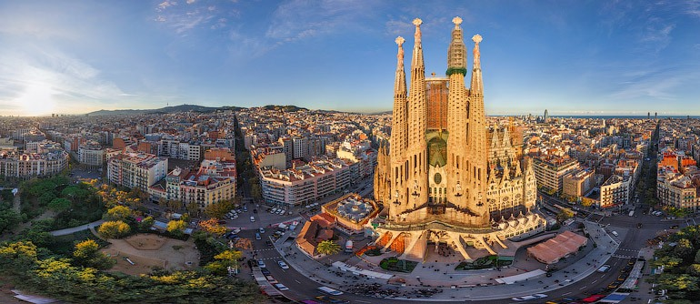

 masdjskldjskldjslaka Espanha, oficialmente Reino da/de Espanha (em castelhano: Reino de España), é um país situado na Europa meridional, na Península Ibérica. Seu território principal é delimitado a sul e a leste pelo Mar Mediterrâneo, com exceção a uma pequena fronteira com o território britânico ultramarino de Gibraltar; ao norte pela França, Andorra e pelo Golfo da Biscaia e ao noroeste e oeste pelo Oceano Atlântico e por Portugal. O território espanhol inclui ainda as Ilhas Baleares, no Mediterrâneo, as Ilhas Canárias, no Oceano Atlântico, próximas da costa Africana e duas cidades autônomas no norte de África, Ceuta e Melilla, que fazem fronteira com o Marrocos.
 Com uma área de 504 030 km², a Espanha é, depois da França, o segundo maior país da Europa Ocidental e da União Europeia. Devido à sua localização, o território da Espanha foi sujeito a muitas influências externas, muitas vezes simultaneamente, desde os tempos pré-históricos até quando a Espanha se tornou um país. Por outro lado, o próprio país foi uma importante fonte de influência para outras regiões, principalmente durante a Era Moderna, quando se tornou um império mundial que deixou como legado mais de 400 milhões de falantes do espanhol espalhados pelo mundo. A Espanha é uma democracia organizada sob a forma de um governo parlamentar sob uma monarquia constitucional. É um país desenvolvido com a nono PIB nominal mais elevado do mundo e elevado padrão de vida (a Espanha possui o 23º melhor Índice de Desenvolvimento Humano (IDH) do mundo).[2] É um membro das Organização das Nações Unidas (ONU), da União Europeia (UE), da Organização do Tratado do Atlântico Norte (OTAN), da Organização para a Cooperação e Desenvolvimento Econômico (OCDE) e da Organização Mundial do Comércio (OMC).
